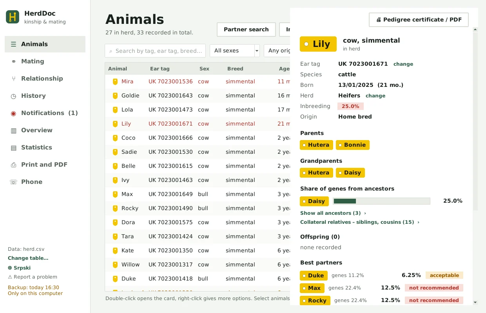

🌳
Pedigree and inbreeding
Pedigree tree, inbreeding coefficient by Wright's method and a warning when an ancestor repeats.
HerdDoc keeps a record card for every animal, calculates inbreeding, suggests the best mating partners and reminds you of births, heat and withdrawal periods. On your Windows PC and on your phone.
Windows 10/11 + phone app · works offline · 6 languages

Pedigree tree, inbreeding coefficient by Wright's method and a warning when an ancestor repeats.
For each female the least related males and the expected inbreeding of the offspring, for the whole herd.
Scan the ear tag, open the record, log an event. Syncs with the PC when the connection is back.
HerdDoc runs on Windows 10 and 11 and is available in the Microsoft Store. The phone app works in the barn without signal and syncs when you are back in range. Workers get their own passwords, every change shows who made it, and only the owner can undo changes. Data is stored on your own computer, encrypted, with daily automatic backups and an optional second copy on OneDrive, Google Drive or USB.
The program is available in English, Serbian, German, French, Spanish and Portuguese, and supports cattle, sheep, goats, pigs, horses and species you add yourself. Import your existing spreadsheet from Excel or CSV and export back any time.
All features are unlocked for the first 30 days, then HerdDoc is free for up to 20 animals. Paid plans start at €49 per year (up to 50 animals) or €5 per month, up to unlimited farms and breeders' associations. Need a due date right now? Use the free gestation calculator.
Yes. The Windows program works fully offline and the phone app works in the barn without signal, syncing when the connection returns.
Cattle, sheep, goats, pigs and horses, plus any species you add with its own gestation length and heat cycle.
With Wright's path method: for every common ancestor of sire and dam the contributions of all paths through the pedigree are added up. HerdDoc does it automatically for every animal and every possible mating.
Free for up to 20 animals after a 30-day full trial. Paid plans: €49, €79, €149, €299 and €599 per year, or monthly from €5.
Then free up to 20 animals. From €49 a year for larger herds.